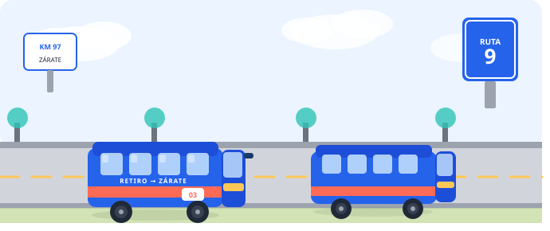
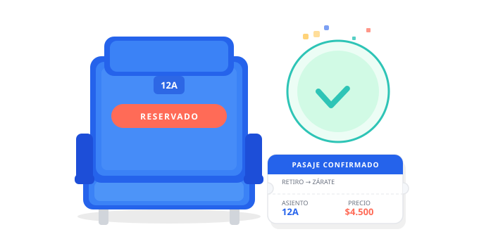

Ruta 3
Viajá cómodo y seguro desde Terminal Retiro hasta Zárate. Un servicio pensado para que llegues sin vueltas.
Salidas frecuentes, unidades confortables y atención personalizada. Conectamos ambos destinos para que tu viaje sea simple de principio a fin.

Comprá tu pasaje en minutos. Consultá horarios, elegí tu servicio y reservá tu asiento desde donde estés, cuando quieras.
